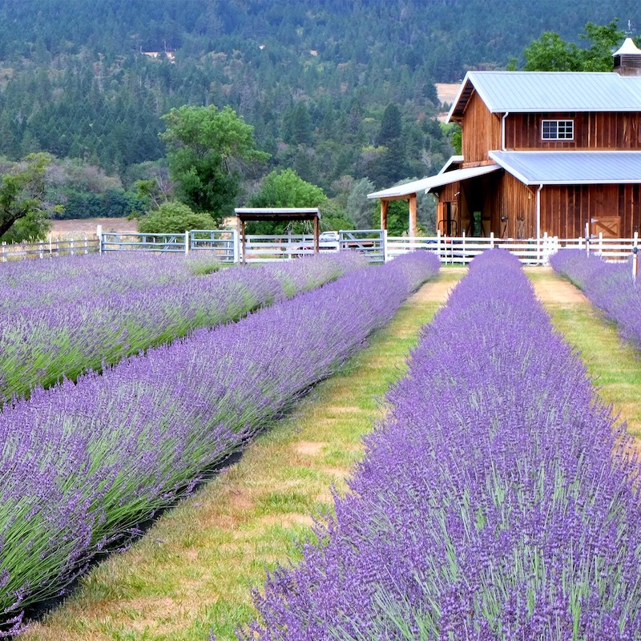
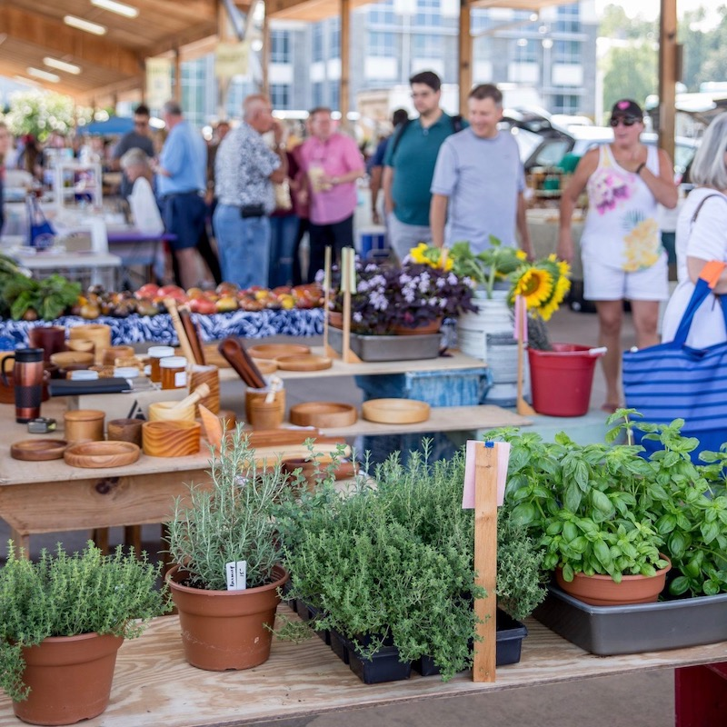
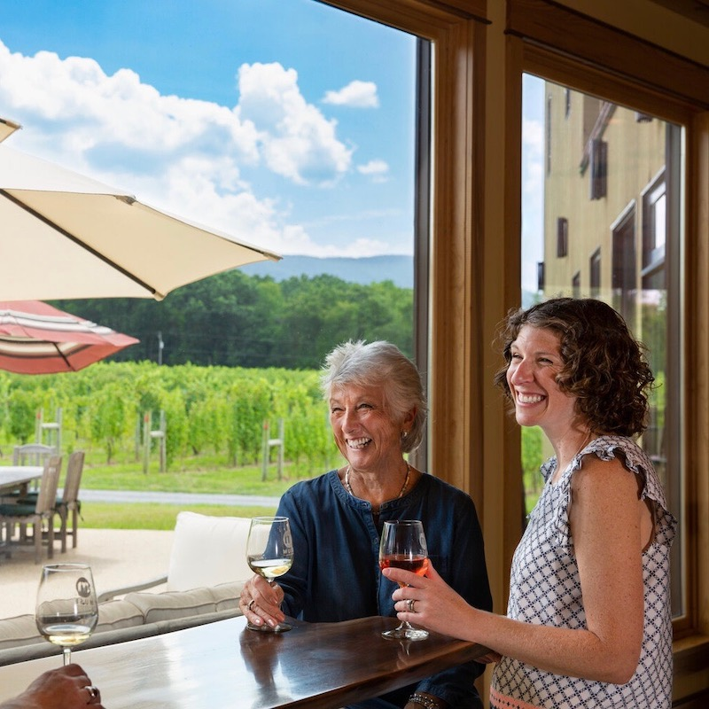

Welcome to Harrisonburg!
Located between the Blue Ridge and Allegheny Mountain ranges in the western part of Virginia, Harrisonburg welcomes vistors with its friendly, small town feel. Whether you are looking for outdoor adventures, something different to satisfy your taste buds with, or a historical experience, Harrisonburg has got it all!
Harrisonburg is home to the first designated Arts and Cultural District, as well as the first Culinary District in Virginia, which both offer something for everyone. Wineries and breweries, farmer's markets, and trails to view the picturesque landscapes can all be found in Harrisonburg. Plan you visit today!
How to make the most of your visit...

Explore hundreds of varieties of lavender plants and grape vines at this farm, dedicated to growing lavender. Wine tastings, bath and body products, and other gifts are available for purchase too.

If you are looking for locally grown produce, the Harrisonburg Farmer's Market is the place to go. It offers a wide selection of homemade cheeses, oven-baked goods, and fresh vegetables.

Experience Harrisonburg, Winchester, and everything between on the spirits trail. The trail includes 30 wineries, breweries, distilleries, and cideries along Interstate 81.